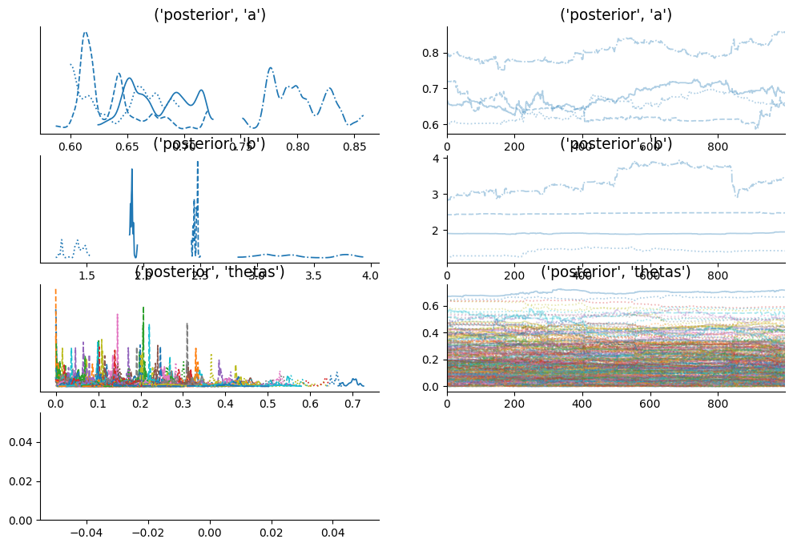

Change of Variable in HMC#
Rat tumor problem: We have J certain kinds of rat tumor diseases. For each kind of tumor, we test \(N_{j}\) people/animals and among those \(y_{j}\) tested positive. Here we assume that \(y_{j}\) is distrubuted with Binom(\(N_{j}\), \(\theta_{j}\)). Our objective is to approximate \(\theta_{j}\) for each type of tumor.
In particular we use following binomial hierarchical model where \(y_{j}\) and \(N_{j}\) are observed variables.
import jax
from datetime import date
rng_key = jax.random.key(int(date.today().strftime("%Y%m%d")))

Posterior Sampling#
Now we use Blackjax’s NUTS algorithm to get posterior samples of \(a\), \(b\), and \(\theta\)
from collections import namedtuple
params = namedtuple("model_params", ["a", "b", "thetas"])
def joint_logdensity(params):
# improper prior for a,b
logdensity_ab = jnp.log(jnp.power(params.a + params.b, -2.5))
# logdensity prior of theta
logdensity_thetas = tfd.Beta(params.a, params.b).log_prob(params.thetas).sum()
# loglikelihood of y
logdensity_y = jnp.sum(
tfd.Binomial(group_size, probs=params.thetas).log_prob(n_of_positives)
)
return logdensity_ab + logdensity_thetas + logdensity_y
We take initial parameters from uniform distribution
rng_key, init_key = jax.random.split(rng_key)
n_params = n_rat_tumors + 2
def init_param_fn(seed):
"""
initialize a, b & thetas
"""
key1, key2, key3 = jax.random.split(seed, 3)
return params(
a=tfd.Uniform(0, 3).sample(seed=key1),
b=tfd.Uniform(0, 3).sample(seed=key2),
thetas=tfd.Uniform(0, 1).sample(n_rat_tumors, seed=key3),
)
init_param = init_param_fn(init_key)
joint_logdensity(init_param) # sanity check
Array(-1270.7018, dtype=float32)
Now we use blackjax’s window adaption algorithm to get NUTS kernel and initial states. Window adaption algorithm will automatically configure inverse_mass_matrix and step size
%%time
warmup = blackjax.window_adaptation(blackjax.nuts, joint_logdensity)
# we use 4 chains for sampling
n_chains = 4
rng_key, init_key, warmup_key = jax.random.split(rng_key, 3)
init_keys = jax.random.split(init_key, n_chains)
init_params = jax.vmap(init_param_fn)(init_keys)
@jax.vmap
def call_warmup(seed, param):
(initial_states, tuned_params), _ = warmup.run(seed, param, 1000)
return initial_states, tuned_params
warmup_keys = jax.random.split(warmup_key, n_chains)
initial_states, tuned_params = jax.jit(call_warmup)(warmup_keys, init_params)
CPU times: user 9.3 s, sys: 382 ms, total: 9.68 s
Wall time: 5.02 s
Now we write inference loop for multiple chains
def inference_loop_multiple_chains(
rng_key, initial_states, tuned_params, log_prob_fn, num_samples, num_chains
):
kernel = blackjax.nuts.build_kernel()
def step_fn(key, state, **params):
return kernel(key, state, log_prob_fn, **params)
def one_step(states, rng_key):
keys = jax.random.split(rng_key, num_chains)
states, infos = jax.vmap(step_fn)(keys, states, **tuned_params)
return states, (states, infos)
keys = jax.random.split(rng_key, num_samples)
_, (states, infos) = jax.lax.scan(one_step, initial_states, keys)
return (states, infos)
%%time
n_samples = 1000
rng_key, sample_key = jax.random.split(rng_key)
states, infos = inference_loop_multiple_chains(
sample_key, initial_states, tuned_params, joint_logdensity, n_samples, n_chains
)
CPU times: user 8.48 s, sys: 278 ms, total: 8.76 s
Wall time: 3.51 s
Arviz Plots#
We have all our posterior samples stored in states.position dictionary and infos store additional information like acceptance probability, divergence, etc. Now, we can use certain diagnostics to judge if our MCMC samples are converged on stationary distribution. Some of widely diagnostics are trace plots, potential scale reduction factor (R hat), divergences, etc. Arviz library provides quicker ways to anaylze these diagnostics. We can use arviz.summary() and arviz_plot_trace(), but these functions take specific format (arviz’s trace) as a input.
# make arviz trace from states
trace = arviz_trace_from_states(states, infos)
summ_df = az.summary(trace)
summ_df
| mean | sd | hdi_3% | hdi_97% | mcse_mean | mcse_sd | ess_bulk | ess_tail | r_hat | |
|---|---|---|---|---|---|---|---|---|---|
| (posterior, a) | 0.690 | 0.072 | 0.601 | 0.825 | 0.035 | 0.018 | 5.0 | 13.0 | 2.43 |
| (posterior, b) | 2.283 | 0.748 | 1.272 | 3.764 | 0.369 | 0.193 | 4.0 | 11.0 | 3.38 |
| ('posterior', 'thetas')[0] | 0.050 | 0.056 | 0.000 | 0.145 | 0.027 | 0.015 | 5.0 | 18.0 | 2.53 |
| ('posterior', 'thetas')[1] | 0.031 | 0.015 | 0.001 | 0.051 | 0.006 | 0.003 | 6.0 | 23.0 | 1.67 |
| ('posterior', 'thetas')[2] | 0.086 | 0.104 | 0.002 | 0.269 | 0.051 | 0.029 | 6.0 | 16.0 | 1.91 |
| ('posterior', 'thetas')[3] | 0.023 | 0.021 | 0.000 | 0.053 | 0.004 | 0.004 | 18.0 | 24.0 | 1.15 |
| ('posterior', 'thetas')[4] | 0.121 | 0.167 | 0.000 | 0.414 | 0.083 | 0.047 | 5.0 | 18.0 | 2.23 |
| ('posterior', 'thetas')[5] | 0.052 | 0.036 | 0.000 | 0.113 | 0.016 | 0.008 | 6.0 | 15.0 | 1.93 |
| ('posterior', 'thetas')[6] | 0.075 | 0.039 | 0.004 | 0.131 | 0.018 | 0.008 | 5.0 | 11.0 | 2.42 |
| ('posterior', 'thetas')[7] | 0.043 | 0.041 | 0.000 | 0.130 | 0.020 | 0.013 | 5.0 | 11.0 | 2.01 |
| ('posterior', 'thetas')[8] | 0.092 | 0.118 | 0.000 | 0.333 | 0.058 | 0.038 | 6.0 | 11.0 | 1.93 |
| ('posterior', 'thetas')[9] | 0.043 | 0.049 | 0.000 | 0.136 | 0.024 | 0.013 | 6.0 | 21.0 | 1.77 |
| ('posterior', 'thetas')[10] | 0.017 | 0.019 | 0.000 | 0.053 | 0.006 | 0.003 | 9.0 | 64.0 | 1.39 |
| ('posterior', 'thetas')[11] | 0.021 | 0.029 | 0.000 | 0.079 | 0.012 | 0.010 | 7.0 | 15.0 | 1.68 |
| ('posterior', 'thetas')[12] | 0.138 | 0.108 | 0.001 | 0.308 | 0.053 | 0.027 | 4.0 | 11.0 | 3.34 |
| ('posterior', 'thetas')[13] | 0.164 | 0.155 | 0.000 | 0.429 | 0.076 | 0.033 | 5.0 | 12.0 | 2.44 |
| ('posterior', 'thetas')[14] | 0.088 | 0.050 | 0.011 | 0.181 | 0.023 | 0.010 | 6.0 | 29.0 | 1.97 |
| ('posterior', 'thetas')[15] | 0.068 | 0.048 | 0.000 | 0.158 | 0.023 | 0.013 | 5.0 | 16.0 | 2.27 |
| ('posterior', 'thetas')[16] | 0.096 | 0.056 | 0.018 | 0.197 | 0.025 | 0.008 | 6.0 | 16.0 | 1.98 |
| ('posterior', 'thetas')[17] | 0.200 | 0.197 | 0.012 | 0.537 | 0.098 | 0.050 | 4.0 | 11.0 | 3.21 |
| ('posterior', 'thetas')[18] | 0.129 | 0.087 | 0.032 | 0.289 | 0.041 | 0.021 | 6.0 | 16.0 | 2.02 |
| ('posterior', 'thetas')[19] | 0.089 | 0.090 | 0.021 | 0.339 | 0.043 | 0.045 | 7.0 | 11.0 | 1.65 |
| ('posterior', 'thetas')[20] | 0.144 | 0.138 | 0.011 | 0.469 | 0.068 | 0.052 | 4.0 | 11.0 | 3.47 |
| ('posterior', 'thetas')[21] | 0.180 | 0.141 | 0.047 | 0.438 | 0.070 | 0.035 | 5.0 | 12.0 | 2.54 |
| ('posterior', 'thetas')[22] | 0.090 | 0.039 | 0.037 | 0.159 | 0.015 | 0.007 | 8.0 | 29.0 | 1.48 |
| ('posterior', 'thetas')[23] | 0.166 | 0.118 | 0.055 | 0.411 | 0.058 | 0.035 | 5.0 | 12.0 | 2.45 |
| ('posterior', 'thetas')[24] | 0.079 | 0.025 | 0.022 | 0.121 | 0.009 | 0.004 | 10.0 | 17.0 | 1.38 |
| ('posterior', 'thetas')[25] | 0.151 | 0.067 | 0.060 | 0.255 | 0.032 | 0.011 | 5.0 | 29.0 | 2.52 |
| ('posterior', 'thetas')[26] | 0.163 | 0.093 | 0.017 | 0.297 | 0.046 | 0.021 | 5.0 | 12.0 | 3.14 |
| ('posterior', 'thetas')[27] | 0.226 | 0.171 | 0.048 | 0.527 | 0.085 | 0.045 | 5.0 | 21.0 | 3.19 |
| ('posterior', 'thetas')[28] | 0.286 | 0.201 | 0.053 | 0.632 | 0.100 | 0.044 | 4.0 | 11.0 | 3.49 |
| ('posterior', 'thetas')[29] | 0.144 | 0.088 | 0.022 | 0.279 | 0.042 | 0.018 | 5.0 | 11.0 | 2.54 |
| ('posterior', 'thetas')[30] | 0.109 | 0.065 | 0.028 | 0.203 | 0.032 | 0.009 | 5.0 | 14.0 | 3.05 |
| ('posterior', 'thetas')[31] | 0.226 | 0.135 | 0.052 | 0.394 | 0.066 | 0.013 | 5.0 | 35.0 | 2.38 |
| ('posterior', 'thetas')[32] | 0.098 | 0.031 | 0.057 | 0.147 | 0.012 | 0.003 | 7.0 | 40.0 | 1.66 |
| ('posterior', 'thetas')[33] | 0.269 | 0.223 | 0.040 | 0.637 | 0.111 | 0.050 | 4.0 | 17.0 | 3.37 |
| ('posterior', 'thetas')[34] | 0.130 | 0.065 | 0.051 | 0.257 | 0.030 | 0.018 | 5.0 | 13.0 | 2.65 |
| ('posterior', 'thetas')[35] | 0.124 | 0.045 | 0.055 | 0.189 | 0.022 | 0.007 | 5.0 | 23.0 | 2.37 |
| ('posterior', 'thetas')[36] | 0.270 | 0.161 | 0.118 | 0.536 | 0.079 | 0.037 | 4.0 | 14.0 | 3.46 |
| ('posterior', 'thetas')[37] | 0.160 | 0.075 | 0.081 | 0.303 | 0.036 | 0.017 | 5.0 | 11.0 | 2.35 |
| ('posterior', 'thetas')[38] | 0.133 | 0.032 | 0.087 | 0.187 | 0.013 | 0.007 | 6.0 | 20.0 | 1.80 |
| ('posterior', 'thetas')[39] | 0.145 | 0.047 | 0.089 | 0.230 | 0.023 | 0.009 | 5.0 | 15.0 | 2.76 |
| ('posterior', 'thetas')[40] | 0.189 | 0.108 | 0.092 | 0.394 | 0.053 | 0.030 | 5.0 | 14.0 | 3.16 |
| ('posterior', 'thetas')[41] | 0.158 | 0.080 | 0.065 | 0.295 | 0.038 | 0.013 | 5.0 | 25.0 | 2.15 |
| ('posterior', 'thetas')[42] | 0.185 | 0.033 | 0.139 | 0.259 | 0.014 | 0.006 | 5.0 | 13.0 | 2.00 |
| ('posterior', 'thetas')[43] | 0.208 | 0.054 | 0.154 | 0.308 | 0.026 | 0.013 | 6.0 | 13.0 | 1.99 |
| ('posterior', 'thetas')[44] | 0.242 | 0.140 | 0.071 | 0.477 | 0.069 | 0.032 | 5.0 | 20.0 | 3.16 |
| ('posterior', 'thetas')[45] | 0.321 | 0.132 | 0.114 | 0.467 | 0.064 | 0.029 | 5.0 | 31.0 | 2.43 |
| ('posterior', 'thetas')[46] | 0.233 | 0.044 | 0.155 | 0.310 | 0.021 | 0.010 | 5.0 | 16.0 | 2.89 |
| ('posterior', 'thetas')[47] | 0.232 | 0.115 | 0.083 | 0.405 | 0.056 | 0.016 | 5.0 | 21.0 | 2.63 |
| ('posterior', 'thetas')[48] | 0.289 | 0.148 | 0.118 | 0.584 | 0.072 | 0.043 | 6.0 | 26.0 | 2.26 |
| ('posterior', 'thetas')[49] | 0.212 | 0.104 | 0.058 | 0.360 | 0.051 | 0.016 | 5.0 | 24.0 | 2.75 |
| ('posterior', 'thetas')[50] | 0.217 | 0.069 | 0.113 | 0.377 | 0.032 | 0.022 | 5.0 | 16.0 | 2.31 |
| ('posterior', 'thetas')[51] | 0.231 | 0.052 | 0.121 | 0.311 | 0.022 | 0.010 | 6.0 | 11.0 | 1.93 |
| ('posterior', 'thetas')[52] | 0.190 | 0.070 | 0.064 | 0.324 | 0.033 | 0.024 | 5.0 | 11.0 | 3.10 |
| ('posterior', 'thetas')[53] | 0.199 | 0.076 | 0.100 | 0.320 | 0.034 | 0.015 | 6.0 | 11.0 | 1.87 |
| ('posterior', 'thetas')[54] | 0.387 | 0.041 | 0.309 | 0.447 | 0.019 | 0.012 | 5.0 | 14.0 | 2.07 |
| ('posterior', 'thetas')[55] | 0.226 | 0.040 | 0.159 | 0.318 | 0.010 | 0.015 | 12.0 | 11.0 | 1.54 |
| ('posterior', 'thetas')[56] | 0.277 | 0.078 | 0.175 | 0.416 | 0.037 | 0.012 | 5.0 | 14.0 | 2.28 |
| ('posterior', 'thetas')[57] | 0.279 | 0.046 | 0.190 | 0.363 | 0.020 | 0.011 | 6.0 | 15.0 | 1.84 |
| ('posterior', 'thetas')[58] | 0.422 | 0.031 | 0.359 | 0.478 | 0.014 | 0.009 | 6.0 | 11.0 | 1.86 |
| ('posterior', 'thetas')[59] | 0.288 | 0.115 | 0.153 | 0.507 | 0.057 | 0.032 | 5.0 | 13.0 | 2.97 |
| ('posterior', 'thetas')[60] | 0.336 | 0.191 | 0.167 | 0.670 | 0.095 | 0.052 | 5.0 | 14.0 | 2.83 |
| ('posterior', 'thetas')[61] | 0.338 | 0.087 | 0.185 | 0.476 | 0.041 | 0.021 | 5.0 | 17.0 | 2.91 |
| ('posterior', 'thetas')[62] | 0.291 | 0.069 | 0.198 | 0.430 | 0.030 | 0.017 | 6.0 | 11.0 | 1.88 |
| ('posterior', 'thetas')[63] | 0.243 | 0.043 | 0.165 | 0.305 | 0.019 | 0.008 | 6.0 | 17.0 | 1.84 |
| ('posterior', 'thetas')[64] | 0.295 | 0.146 | 0.135 | 0.546 | 0.072 | 0.032 | 5.0 | 16.0 | 2.97 |
| ('posterior', 'thetas')[65] | 0.244 | 0.081 | 0.144 | 0.370 | 0.040 | 0.010 | 5.0 | 11.0 | 2.41 |
| ('posterior', 'thetas')[66] | 0.319 | 0.070 | 0.209 | 0.416 | 0.034 | 0.011 | 4.0 | 11.0 | 3.61 |
| ('posterior', 'thetas')[67] | 0.280 | 0.044 | 0.200 | 0.349 | 0.020 | 0.009 | 5.0 | 27.0 | 2.37 |
| ('posterior', 'thetas')[68] | 0.324 | 0.084 | 0.199 | 0.440 | 0.041 | 0.016 | 5.0 | 11.0 | 2.91 |
| ('posterior', 'thetas')[69] | 0.483 | 0.077 | 0.371 | 0.589 | 0.037 | 0.010 | 5.0 | 15.0 | 2.41 |
| ('posterior', 'thetas')[70] | 0.385 | 0.217 | 0.091 | 0.710 | 0.107 | 0.046 | 5.0 | 40.0 | 2.85 |
| (sample_stats, diverging) | 0.997 | 0.055 | 1.000 | 1.000 | 0.001 | 0.011 | 1902.0 | 4000.0 | 1.00 |
r_hat is showing measure of each chain is converged to stationary distribution. r_hat should be less than or equal to 1.01, here we get r_hat far from 1.01 for each latent sample.
/opt/hostedtoolcache/Python/3.11.15/x64/lib/python3.11/site-packages/arviz/stats/density_utils.py:488: UserWarning: Your data appears to have a single value or no finite values
warnings.warn("Your data appears to have a single value or no finite values")
---------------------------------------------------------------------------
TypeError Traceback (most recent call last)
Cell In[13], line 1
----> 1 az.plot_trace(trace)
2 plt.tight_layout();
File /opt/hostedtoolcache/Python/3.11.15/x64/lib/python3.11/site-packages/arviz/plots/traceplot.py:271, in plot_trace(data, var_names, filter_vars, transform, coords, divergences, kind, figsize, rug, lines, circ_var_names, circ_var_units, compact, compact_prop, combined, chain_prop, legend, plot_kwargs, fill_kwargs, rug_kwargs, hist_kwargs, trace_kwargs, rank_kwargs, labeller, axes, backend, backend_config, backend_kwargs, show)
268 backend = backend.lower()
270 plot = get_plotting_function("plot_trace", "traceplot", backend)
--> 271 axes = plot(**trace_plot_args)
273 return axes
File /opt/hostedtoolcache/Python/3.11.15/x64/lib/python3.11/site-packages/arviz/plots/backends/matplotlib/traceplot.py:252, in plot_trace(data, var_names, divergences, kind, figsize, rug, lines, circ_var_names, circ_var_units, compact, compact_prop, combined, chain_prop, legend, labeller, plot_kwargs, fill_kwargs, rug_kwargs, hist_kwargs, trace_kwargs, rank_kwargs, plotters, divergence_data, axes, backend_kwargs, backend_config, show)
249 aux_plot_kwargs = plot_kwargs
250 aux_trace_kwargs = trace_kwargs
--> 252 ax = _plot_chains_mpl(
253 ax,
254 idy,
255 value,
256 data,
257 chain_prop,
258 combined,
259 xt_labelsize,
260 rug,
261 kind,
262 aux_trace_kwargs,
263 hist_kwargs,
264 aux_plot_kwargs,
265 fill_kwargs,
266 rug_kwargs,
267 rank_kwargs,
268 circular,
269 circ_var_units,
270 circ_units_trace,
271 )
273 else:
274 sub_data = data[var_name].sel(**selection)
File /opt/hostedtoolcache/Python/3.11.15/x64/lib/python3.11/site-packages/arviz/plots/backends/matplotlib/traceplot.py:491, in _plot_chains_mpl(axes, idy, value, data, chain_prop, combined, xt_labelsize, rug, kind, trace_kwargs, hist_kwargs, plot_kwargs, fill_kwargs, rug_kwargs, rank_kwargs, circular, circ_var_units, circ_units_trace)
489 aux_kwargs = dealiase_sel_kwargs(plot_kwargs, chain_prop, chain_idx)
490 if not idy:
--> 491 axes = plot_dist(
492 values=row,
493 textsize=xt_labelsize,
494 rug=rug,
495 ax=axes,
496 hist_kwargs=hist_kwargs,
497 plot_kwargs=aux_kwargs,
498 fill_kwargs=fill_kwargs,
499 rug_kwargs=rug_kwargs,
500 backend="matplotlib",
501 show=False,
502 is_circular=circ_var_units,
503 )
505 if kind == "rank_bars" and idy:
506 axes = plot_rank(data=value, kind="bars", ax=axes, **rank_kwargs)
File /opt/hostedtoolcache/Python/3.11.15/x64/lib/python3.11/site-packages/arviz/plots/distplot.py:232, in plot_dist(values, values2, color, kind, cumulative, label, rotated, rug, bw, quantiles, contour, fill_last, figsize, textsize, plot_kwargs, fill_kwargs, rug_kwargs, contour_kwargs, contourf_kwargs, pcolormesh_kwargs, hist_kwargs, is_circular, ax, backend, backend_kwargs, show, **kwargs)
229 backend = backend.lower()
231 plot = get_plotting_function("plot_dist", "distplot", backend)
--> 232 ax = plot(**dist_plot_args)
233 return ax
File /opt/hostedtoolcache/Python/3.11.15/x64/lib/python3.11/site-packages/arviz/plots/backends/matplotlib/distplot.py:92, in plot_dist(values, values2, color, kind, cumulative, label, rotated, rug, bw, quantiles, contour, fill_last, figsize, textsize, plot_kwargs, fill_kwargs, rug_kwargs, contour_kwargs, contourf_kwargs, pcolormesh_kwargs, hist_kwargs, is_circular, ax, backend_kwargs, show)
89 plot_kwargs.setdefault("color", color)
90 legend = label is not None
---> 92 ax = plot_kde(
93 values,
94 values2,
95 cumulative=cumulative,
96 rug=rug,
97 label=label,
98 bw=bw,
99 quantiles=quantiles,
100 rotated=rotated,
101 contour=contour,
102 legend=legend,
103 fill_last=fill_last,
104 textsize=textsize,
105 plot_kwargs=plot_kwargs,
106 fill_kwargs=fill_kwargs,
107 rug_kwargs=rug_kwargs,
108 contour_kwargs=contour_kwargs,
109 contourf_kwargs=contourf_kwargs,
110 pcolormesh_kwargs=pcolormesh_kwargs,
111 ax=ax,
112 backend="matplotlib",
113 backend_kwargs=backend_kwargs,
114 is_circular=is_circular,
115 show=show,
116 )
118 if backend_show(show):
119 plt.show()
File /opt/hostedtoolcache/Python/3.11.15/x64/lib/python3.11/site-packages/arviz/plots/kdeplot.py:266, in plot_kde(values, values2, cumulative, rug, label, bw, adaptive, quantiles, rotated, contour, hdi_probs, fill_last, figsize, textsize, plot_kwargs, fill_kwargs, rug_kwargs, contour_kwargs, contourf_kwargs, pcolormesh_kwargs, is_circular, ax, legend, backend, backend_kwargs, show, return_glyph, **kwargs)
263 if bw == "default":
264 bw = "taylor" if is_circular else "experimental"
--> 266 grid, density = kde(values, is_circular, bw=bw, adaptive=adaptive, cumulative=cumulative)
267 lower, upper = grid[0], grid[-1]
269 density_q = density if cumulative else density.cumsum() / density.sum()
File /opt/hostedtoolcache/Python/3.11.15/x64/lib/python3.11/site-packages/arviz/stats/density_utils.py:499, in kde(x, circular, **kwargs)
496 else:
497 kde_fun = _kde_linear
--> 499 return kde_fun(x, **kwargs)
File /opt/hostedtoolcache/Python/3.11.15/x64/lib/python3.11/site-packages/arviz/stats/density_utils.py:576, in _kde_linear(x, bw, adaptive, extend, bound_correction, extend_fct, bw_fct, bw_return, custom_lims, cumulative, grid_len, **kwargs)
574 x_max = x.max()
575 x_std = np.std(x)
--> 576 x_range = x_max - x_min
578 # Determine grid
579 grid_min, grid_max, grid_len = _get_grid(
580 x_min, x_max, x_std, extend_fct, grid_len, custom_lims, extend, bound_correction
581 )
TypeError: numpy boolean subtract, the `-` operator, is not supported, use the bitwise_xor, the `^` operator, or the logical_xor function instead.

Trace plots also looks terrible and does not seems to be converged! Also, black band shows that every sample is diverged from original distribution. So what’s wrong happeing here?
Well, it’s related to support of latent variable. In HMC, the latent variable must be in an unconstrained space, but in above model theta is constrained in between 0 to 1. We can use change of variable trick to solve above problem
Change of Variable#
We can sample from logits which is in unconstrained space and in joint_logdensity() we can convert logits to theta by suitable bijector (sigmoid). We calculate jacobian (first order derivaive) of bijector to tranform one probability distribution to another
transform_fn = jax.nn.sigmoid
log_jacobian_fn = lambda logit: jnp.log(jnp.abs(jnp.diag(jax.jacfwd(transform_fn)(logit))))
Alternatively, using the bijector class in TFP directly:
bij = tfb.Sigmoid()
transform_fn = bij.forward
log_jacobian_fn = bij.forward_log_det_jacobian
params = namedtuple("model_params", ["a", "b", "logits"])
def joint_logdensity_change_of_var(params):
# change of variable
thetas = transform_fn(params.logits)
log_det_jacob = jnp.sum(log_jacobian_fn(params.logits))
# improper prior for a,b
logdensity_ab = jnp.log(jnp.power(params.a + params.b, -2.5))
# logdensity prior of theta
logdensity_thetas = tfd.Beta(params.a, params.b).log_prob(thetas).sum()
# loglikelihood of y
logdensity_y = jnp.sum(
tfd.Binomial(group_size, probs=thetas).log_prob(n_of_positives)
)
return logdensity_ab + logdensity_thetas + logdensity_y + log_det_jacob
except for the change of variable in joint_logdensity() function, everthing will remain same
rng_key, init_key = jax.random.split(rng_key)
def init_param_fn(seed):
"""
initialize a, b & logits
"""
key1, key2, key3 = jax.random.split(seed, 3)
return params(
a=tfd.Uniform(0, 3).sample(seed=key1),
b=tfd.Uniform(0, 3).sample(seed=key2),
logits=tfd.Uniform(-2, 2).sample(n_rat_tumors, key3),
)
init_param = init_param_fn(init_key)
joint_logdensity_change_of_var(init_param) # sanity check
%%time
warmup = blackjax.window_adaptation(blackjax.nuts, joint_logdensity_change_of_var)
# we use 4 chains for sampling
n_chains = 4
rng_key, init_key, warmup_key = jax.random.split(rng_key, 3)
init_keys = jax.random.split(init_key, n_chains)
init_params = jax.vmap(init_param_fn)(init_keys)
@jax.vmap
def call_warmup(seed, param):
(initial_states, tuned_params), _ = warmup.run(seed, param, 1000)
return initial_states, tuned_params
warmup_keys = jax.random.split(warmup_key, n_chains)
initial_states, tuned_params = call_warmup(warmup_keys, init_params)
%%time
n_samples = 1000
rng_key, sample_key = jax.random.split(rng_key)
states, infos = inference_loop_multiple_chains(
sample_key, initial_states, tuned_params, joint_logdensity_change_of_var, n_samples, n_chains
)
# convert logits samples to theta samples
position = states.position._asdict()
position["thetas"] = jax.nn.sigmoid(position["logits"])
del position["logits"] # delete logits
states = states._replace(position=position)
# make arviz trace from states
trace = arviz_trace_from_states(states, infos, burn_in=0)
summ_df = az.summary(trace)
summ_df
print(f"Number of divergence: {infos.is_divergent.sum()}")
We can see that r_hat is less than or equal to 1.01 for each latent variable, trace plots looks converged to stationary distribution, and only few samples are diverged.
Using a PPL#
Probabilistic programming language usually provides functionality to apply change of variable easily (often done automatically). In this case for TFP, we can use its modeling API tfd.JointDistribution*.
tfed = tfp.experimental.distributions
@tfd.JointDistributionCoroutineAutoBatched
def model():
# TFP does not have improper prior, use uninformative prior instead
a = yield tfd.HalfCauchy(0, 100, name='a')
b = yield tfd.HalfCauchy(0, 100, name='b')
yield tfed.IncrementLogProb(jnp.log(jnp.power(a + b, -2.5)), name='logdensity_ab')
thetas = yield tfd.Sample(tfd.Beta(a, b), n_rat_tumors, name='thetas')
yield tfd.Binomial(group_size, probs=thetas, name='y')
# Sample from the prior and prior predictive distributions. The result is a pytree.
# model.sample(seed=rng_key)
# Condition on the observed (and auxiliary variable).
pinned = model.experimental_pin(logdensity_ab=(), y=n_of_positives)
# Get the default change of variable bijectors from the model
bijectors = pinned.experimental_default_event_space_bijector()
rng_key, init_key = jax.random.split(rng_key)
prior_sample = pinned.sample_unpinned(seed=init_key)
# You can check the unbounded sample
# bijectors.inverse(prior_sample)
def joint_logdensity(unbound_param):
param = bijectors.forward(unbound_param)
log_det_jacobian = bijectors.forward_log_det_jacobian(unbound_param)
return pinned.unnormalized_log_prob(param) + log_det_jacobian
%%time
warmup = blackjax.window_adaptation(blackjax.nuts, joint_logdensity)
# we use 4 chains for sampling
n_chains = 4
rng_key, init_key, warmup_key = jax.random.split(rng_key, 3)
init_params = bijectors.inverse(pinned.sample_unpinned(n_chains, seed=init_key))
@jax.vmap
def call_warmup(seed, param):
(initial_states, tuned_params), _ = warmup.run(seed, param, 1000)
return initial_states, tuned_params
warmup_keys = jax.random.split(warmup_key, n_chains)
initial_states, tuned_params = call_warmup(warmup_keys, init_params)
%%time
n_samples = 1000
rng_key, sample_key = jax.random.split(rng_key)
states, infos = inference_loop_multiple_chains(
sample_key, initial_states, tuned_params, joint_logdensity, n_samples, n_chains
)
# convert logits samples to theta samples
position = states.position
states = states._replace(position=bijectors.forward(position))
# make arviz trace from states
trace = arviz_trace_from_states(states, infos, burn_in=0)
summ_df = az.summary(trace)
summ_df